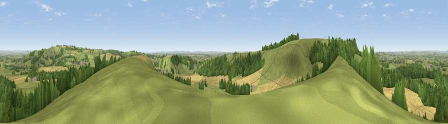

Viewpoint near Melcombe Bingham
#5054 in England · top 13% of its area beats it · near Melcombe Bingham · footpathWhere it is
The exact computed spot (ST 74812 03125). Click the marker for map links.
Public access: a public right of way passes within 49 m of this spot. Computed from Natural England's CRoW access layer and OpenStreetMap rights of way — not the legal definitive map. Always verify locally.
The view, rendered

A 360° render of this exact spot computed from the terrain model, tree cover and land cover — summer colours, afternoon light, calibrated against photographs of famous viewpoints. Real trees, hedges and buildings will differ in detail.
The panorama
Grey silhouette: terrain skyline in each direction (720 bearings, Earth curvature and refraction included). Dashed green: skyline with trees (+15 m) and buildings (+8 m) as obstacles. Blue strip: how far the ground is visible on each bearing.
Where the view opens
Wedge length = distance to the farthest visible ground on that bearing (vegetation-aware). Rings at 10, 25 and 50 km.
What fills the view
43% grassland · 34% cropland · 22% woodland ·
Angular shares of the visible panorama (visual magnitude), not map area. Landscape diversity 0.48 (0–1 Shannon).
Key numbers
More beautiful places nearby
The staircase of upgrades: each row has a higher view potential than everything closer. Driving times are estimates from straight-line distance, calibrated against real road routing — check an actual route before setting out.
| Place | Direction | Drive | Score |
|---|---|---|---|
| Viewpoint near Woolland | NE · 4 km | ~9 min | 74.5 |
| Viewpoint near Upwey | SSW · 19 km | ~32 min | 77.6 |
| Bincombe Down | SSW · 19 km | ~32 min | 78.6 |
| East Hill | S · 19 km | ~32 min | 79.6 |
| Viewpoint near Sutton Poyntz | SSW · 19 km | ~33 min | 79.9 |
| Viewpoint near Portesham | SW · 21 km | ~35 min | 82.7 |
| Viewpoint near Chaldon Herring | S · 22 km | ~36 min | 82.9 |
| Viewpoint near Chaldon Herring | S · 22 km | ~37 min | 83.5 |
50.82711, -2.35898 · source: screening · position refined by local search. Computed location — check access rights before visiting.